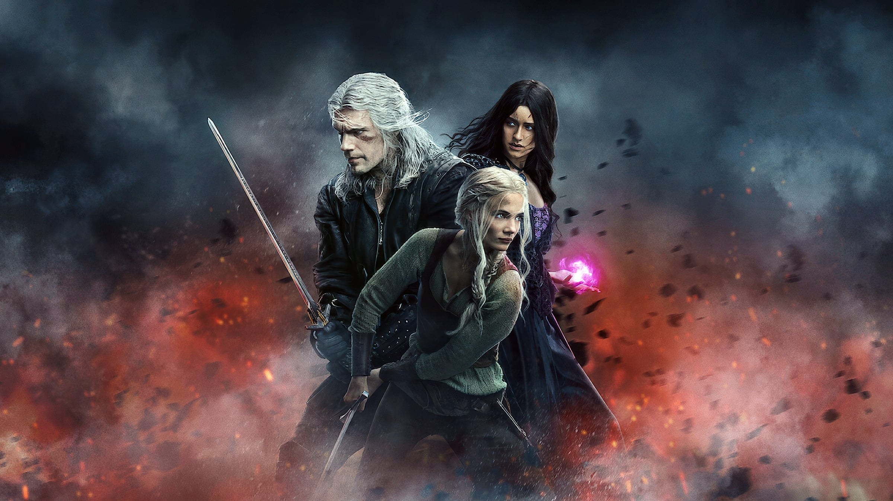
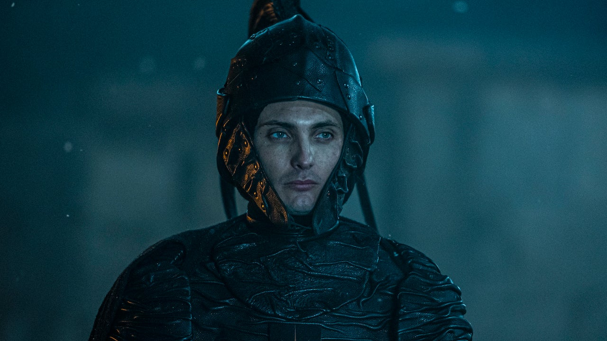

Protagonists
The main protagonists of the Witcher Universe, seeking to accomplish many different things in their journeys.
The main protagonists of the Witcher Universe, seeking to accomplish many different things in their journeys.

The main antagonists of the Witcher Universe, seeking to destroy and bring ruin to everything because of their quests for power.
